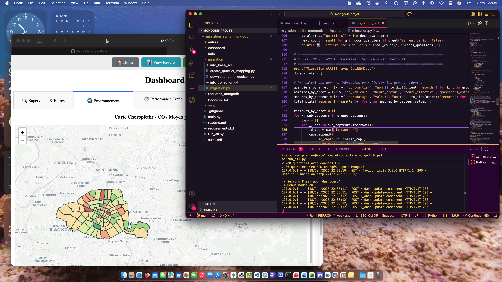

Le but de ce projet était de migrer une base de données existante d'un format SQLite vers MongoDB. L'objectif principal était d'améliorer la performance et la scalabilité de l'application en utilisant une base de données NoSQL. Nous avons dû analyser la structure actuelle de la base de données, concevoir un schéma adapté pour MongoDB, et développer des scripts pour transférer les données tout en assurant leur intégrité.
Nous avons adopté une approche Agile pour gérer ce projet. J'ai personellement pris le rôle de Scrum Master, en gérant l'avancement du projet. J'ai personellement conçu le script de migration des données en Python, et j'ai également oeuvré sur le reste du projet également.
L'une des principales difficultés a été de comprendre les différences fondamentales entre les bases de données relationnelles et NoSQL. La modélisation des données pour MongoDB a nécessité une réflexion approfondie pour optimiser les performances tout en conservant la cohérence des données. Nous avons eu des problèmes de performance lors des tests avec certaines requetes sur la bas NoSQL.
Ce projet m'a permis de renforcer mes compétences en gestion de projet Agile, en particulier dans le rôle de Scrum Master. J'ai également approfondi mes connaissances en bases de données NoSQL, en apprenant à concevoir des schémas efficaces pour MongoDB et à écrire des scripts de migration de données en Python. Enfin, j'ai amélioré mes compétences en collaboration d'équipe, en travaillant étroitement avec mes coéquipiers pour surmonter les défis techniques et atteindre nos objectifs communs.